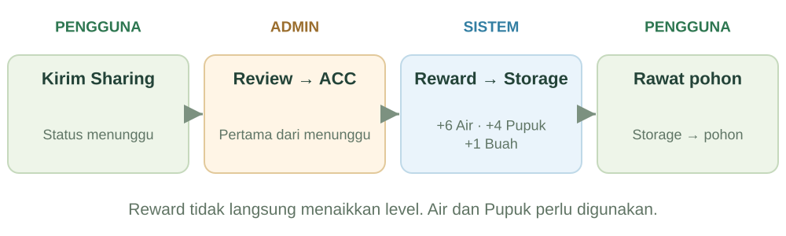
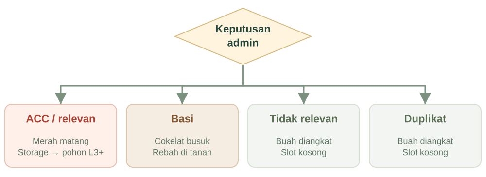
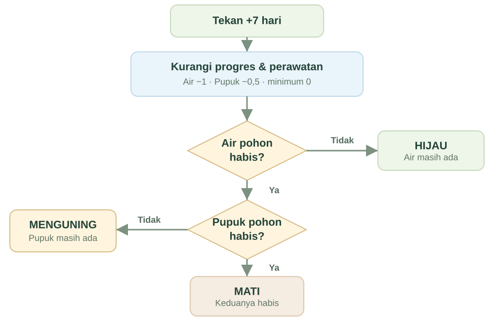

PENGGUNA
- Kirim konten dan selesaikan Learning.
- Terima reward di Storage.
- Siram, pupuk, dan pasang buah.
01 · GAMBARAN UTAMA

| Yang ada | Yang tidak ada |
|---|---|
| Dua sudut pandang pada halaman yang sama | Login, akun sungguhan, dan database Neon |
| State pohon bersama di memori tab | Penyimpanan lintas perangkat |
| Tombol contoh aktivitas dan keputusan | Form kuis atau komentar manual |
| Alat demo terpisah, aturan dan riwayat dapat dibuka | Perubahan terhadap akun KMS asli |
Live: https://kebunku-tree-simulator.testtry.workers.dev
02 · ANGKA & PERTUMBUHAN
| Angka | Fungsi | Berubah karena |
|---|---|---|
| Storage | Persediaan belum dipakai | Reward menambah; perawatan memakai |
| Progres | Menentukan syarat naik level | Pemakaian Air/Pupuk; dikurangi decay |
| Sisa di pohon | Menentukan hijau / kuning / mati | Perawatan menambah; decay mengurangi |
| Tombol | Storage | Perawatan / progres |
|---|---|---|
| Siram | −1 Air | Perawatan +1 Air; progres +1 jika belum penuh |
| Pupuk | −1 Pupuk | Perawatan +1 Pupuk; progres +1 jika belum penuh |
| Pasang buah | −1 buah tersimpan | Tidak menambah progres/perawatan; sehat dan L3+ |
| Level | Tahap | Air total | Pupuk total |
|---|---|---|---|
| L0 | Tanah kosong | 0 | 0 |
| L1 | Bibit | 1 | 1 |
| L2 | Daun | 3 | 2 |
| L3 | Mulai berbuah | 7 | 5 |
| L4 | Pohon besar | 27 | 18 |
| L5 | Cabang kiri | 52 | 30 |
| L6 | Cabang kanan | 77 | 42 |
| L7 | Pohon penuh | 101 | 54 |
Jika progres sudah penuh dan tidak perlu pemulihan, resource tetap di Storage. Jika dipakai untuk pemulihan, progres penuh tidak ditambah melewati target.
03 · REWARD & KONTEN
| Aktivitas | Air | Pupuk | Buah | Batas |
|---|---|---|---|---|
| Login | +1 | — | — | Sekali per hari simulasi |
| Tuntas Learning | — | +1 | — | Sekali per materi baru |
| Beri bintang | +1 | — | — | 5 bintang contoh; setelah tuntas; sekali per materi |
| Sharing baru | — | — | — | Menunggu review |
| ACC pertama | +6 | +4 | +1 | Dari menunggu; masuk Storage |
| ACC ulang | — | — | Aktif kembali | Slot semula; tanpa Air/Pupuk baru |

04 · WAKTU & KONDISI

| Klik +7 | Hari | Air pohon | Pupuk pohon | Kondisi |
|---|---|---|---|---|
| 0 | 0 | 7 | 5 | Hijau |
| 1 | 7 | 6 | 4,5 | Hijau |
| 2 | 14 | 5 | 4 | Hijau |
| 6 | 42 | 1 | 2 | Hijau |
| 7 | 49 | 0 | 1,5 | Menguning |
| 9 | 63 | 0 | 0,5 | Menguning |
| 10 | 70 | 0 | 0 | Mati |
Contoh L3 dimulai 7/5. Reset L0 dimulai dengan perawatan 1/1, sehingga Air dapat habis pada satu periode. Kondisi mengikuti nilai tersisa, bukan jumlah klik.
05 · PANDUAN OPERASIONAL
| Tombol | Efek |
|---|---|
| +7 hari | Kurangi progres dan perawatan: 1 Air / 0,5 Pupuk per periode |
| Menguning / Mati | Override kondisi: Air 0 dengan Pupuk tersisa / keduanya 0 |
| Sehatkan | Pulihkan perawatan; progres yang hilang tidak dikembalikan |
| +1 Air / +1 Pupuk | Dua tombol terpisah: tambah satu resource ke Storage; progres tetap |
| Boost | +10 Air, +6 Pupuk, +1 Buah bonus ke Storage; bukan progres |
| Level +1 / −1 | Jalan pintas level/progres; naik level demo mengisi cadangan sesuai ambang |
| Contoh berbuah | Mulai ulang L3, tiga konten ACC, tiga buah terpasang |
| Reset | Konfirmasi inline; kembali L0 dengan persediaan awal |
| Skenario | Hasil benar |
|---|---|
| Sharing → ACC → Rawat | Reward masuk Storage dulu; baru pemakaian mengubah progres |
| ACC ulang / slot diangkat | Tidak ada Air/Pupuk ganda; slot buah lain tetap |
| Contoh L3 → +7 hari dua kali | 5 Air / 4 Pupuk di pohon, tetap hijau |
| Mati → Air saja / Pupuk saja | Air saja → hijau; Pupuk saja tanpa Air → menguning |
| Reload | Contoh awal L3; kembali ke sisi Pengguna |
06 · REFERENSI IMPLEMENTASI
| Berkas | Fungsi |
|---|---|
| index.html | Struktur dua peran dan tabel aturan |
| src/main.js | Rendering, pergantian peran, event dan feedback |
| src/roles.js | Aksi pengguna/admin/demo dan guard UI |
| src/simulation.js | Menjalankan tombol tanpa API |
| src/engine/gamification.js | Perhitungan, ledger buah, dan kondisi |
| src/engine/tree-svg.js | Renderer SVG batang, cabang, daun dan buah |
| src/compact-layout.css | Layout ringkas dan responsivitas |
| wrangler.jsonc | Worker simulator terpisah |
Source: github.com/alfarissm/kms-knowledge-garden-prototype/tree/main/simulator-pohon